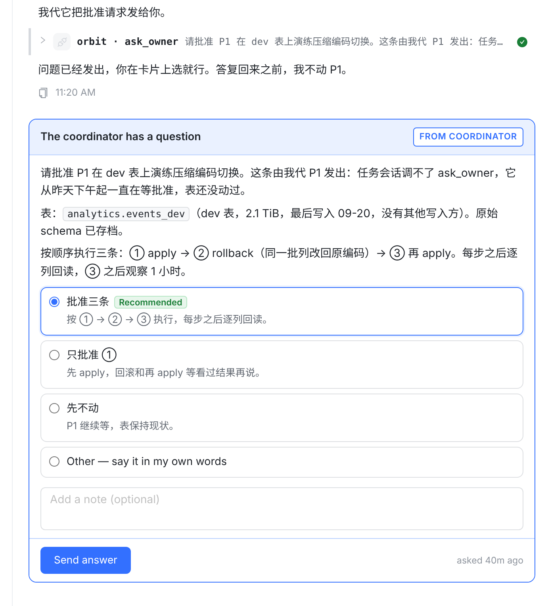
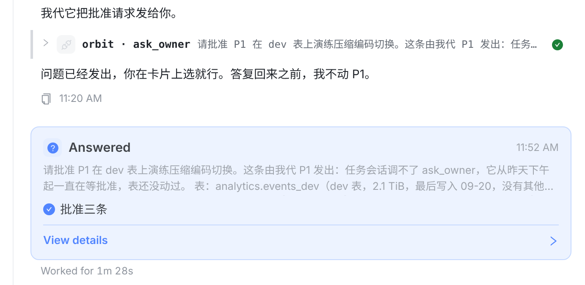
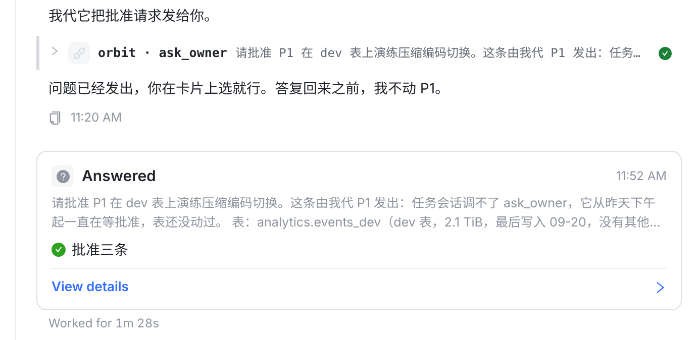
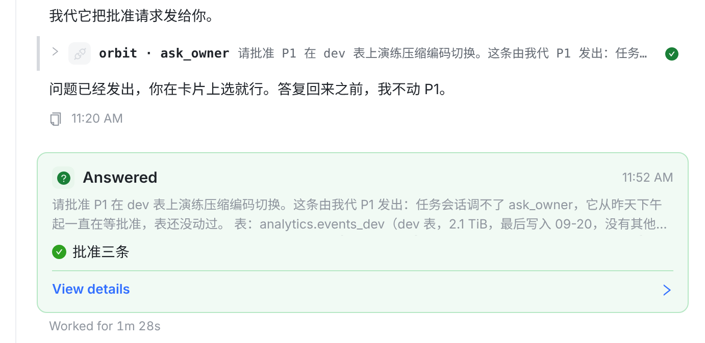
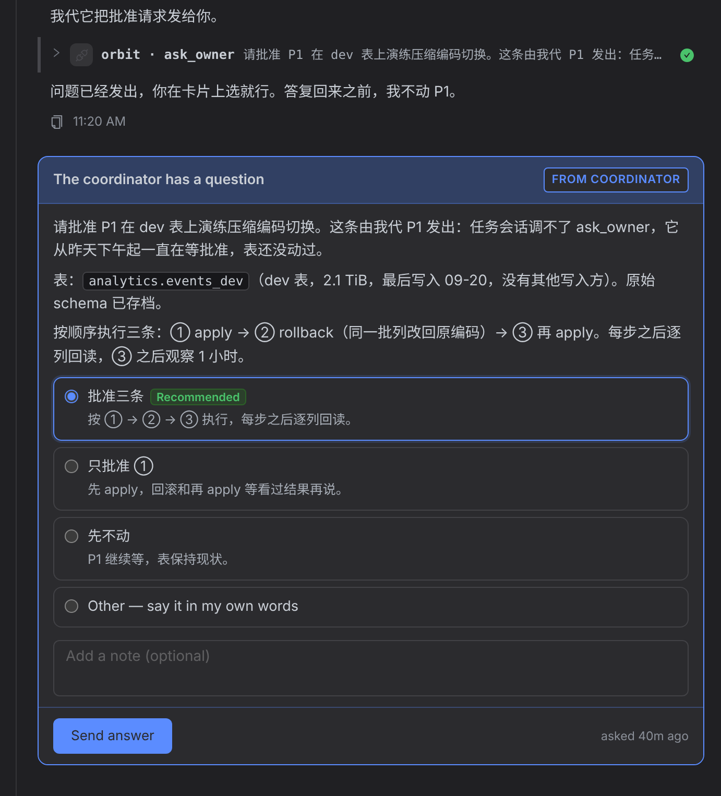
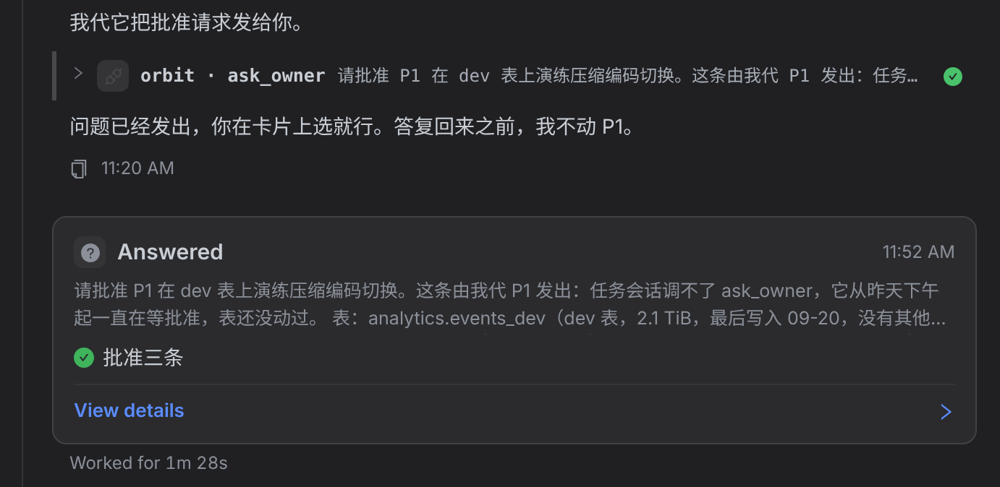

今天，开着的提问卡（等你回答）和答完的 Answered 卡都是蓝色，只是答完的那张淡一点，扫一眼分不出哪张还在等你。建议答之前保持蓝色（等你回答），答之后换成中性灰框 + 绿勾（已经结束的记录）。下面是同一段对话答之前和答之后的真实页面截图（接着「合并成一张卡」的方案 M），数据是样例。






--border / --bg-raised / --success-solid）；iOS / macOS / Android 把答完那张卡的底色和边框换成同一组中性色。文字和结构都不变。